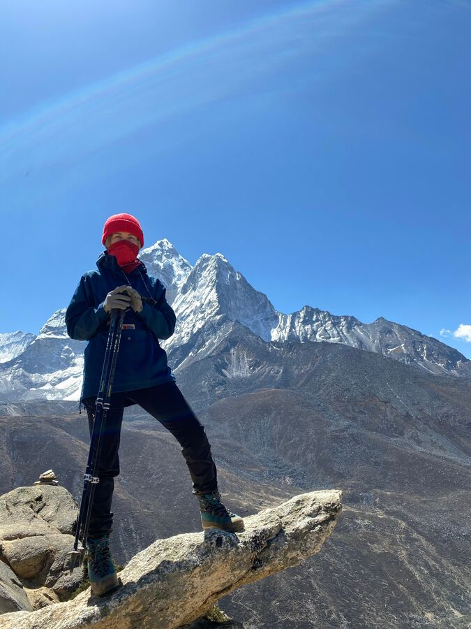
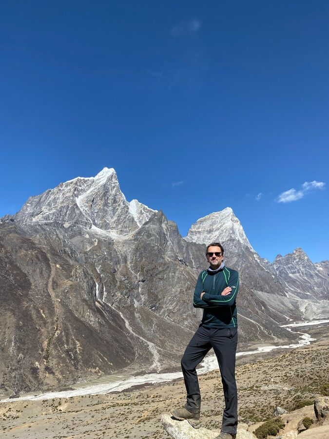
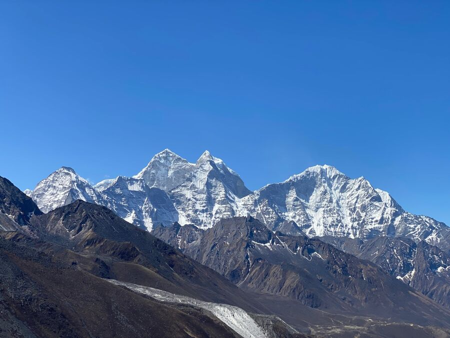
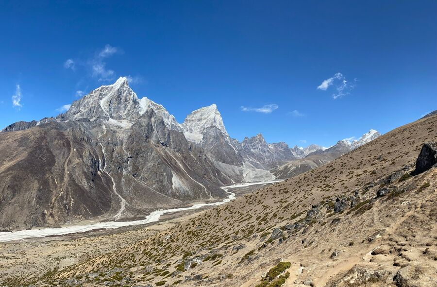
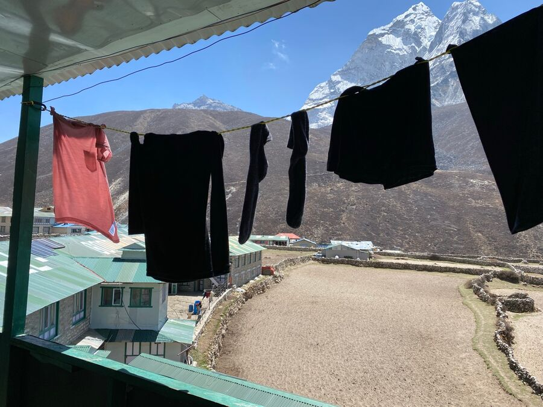
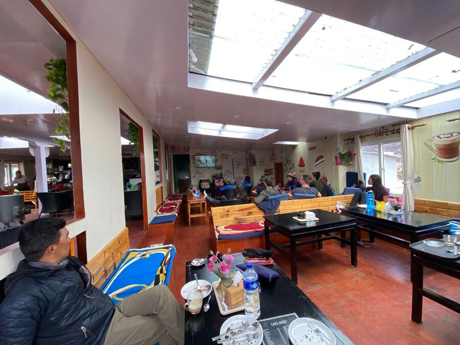
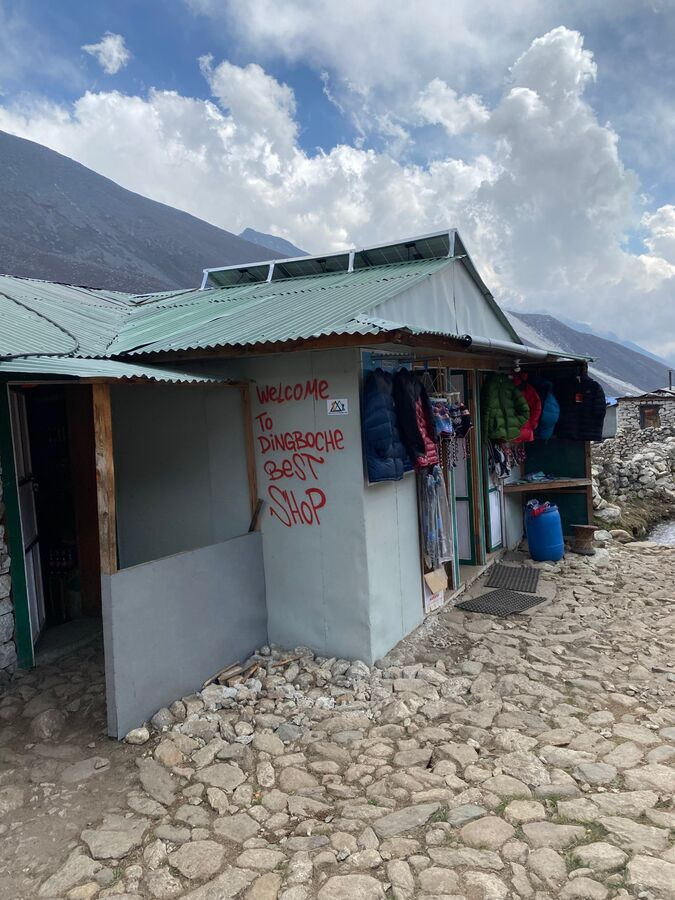

Es war gestern mit Abstand die schlimmste Nacht. Es war wirklich klirrend kalt im Zimmer. Mit Schlafsack und Decke ging es aber. Das Problem: Man schlüpft mit seinen warmen Fleece-Klamotten in den kalten Schlafsack und wärmt sich so langsam auf. Man kann auch einschlafen. Aber es ist später natürlich viel zu heiss. Ich schlief wohl kurz nach meinem Blogeintrag ein, wachte dann aber nach 2 Stunden wieder auf. Und bis ca. 3 Uhr konnte ich nicht wieder einschlafen. Der Wecker klingelte dann um 6:30 Uhr.
Ich kann im Schlafsack einfach nicht schlafen. Ohne ist es aber zu kalt. Mit Kleidung und Schlafsack zu heiss. Alles rutscht. Man schwitzt, man friert. Der enge Schlafsack und die schwere Decke drücken auf die Brust, und man bekommt ohnehin nicht so gut Luft auf über 4.000 Höhenmetern. Und natürlich ist auch alles sehr staubig. Einerseits, weil die Umgebung sehr sandig ist und die vielen Trekker alles immer wieder aufwirbeln. Andererseits ist das Staubputzen hier daher generell eine fast unlösbare Aufgabe. Nasentropfen muss man leider dabei haben.
Nach dem Frühstück ging es heute zwecks letzter Akklimatisierung ab 8 Uhr den benachbarten Nangkartshang (5.073m) hinauf, allerdings nur einen kleinen Teil. Es geht im Zickzack recht sportlich nach oben. Schritt für Schritt kämpft man sich hoch. Wir kamen damit gut zurecht.
Die Sonne schien, aber ein eisiger Wind zog den Hügel hinauf. Aktuell reicht ein Windbreaker oder eine Fleecejacke unter diesen Umständen noch aus.
Wir gingen ca. 350m hoch und erreichten dann 4.680 Höhenmeter. Dort machten wir einige Fotos.


Man hatte einen schönen Rundumblick über die benachbarten Berge: Shartse (7.547m), Island Peak (6.189m), Ama Dablam (6.856m), Taboche (6.495m), Cholatse (6.440m) und den Lobuche (6.145m). Ganz links konnte man in der Ferne sogar den Makalu sehen, der sich genau auf der Grenze von Nepal und China befindet und mit 8.463m der fünfthöchste Berg der Welt ist.


Gegen 9:45 Uhr stiegen wir wieder ab. Erst beim Abstieg bemerkten wir, wie viel Höhe wir tatsächlich geschafft hatten. Der Abstieg war durchaus anstrengend, weil der Weg sehr sandig war und man schnell ins Rutschen kam. Nach rund einer Stunde waren wir unten angekommen.
Der Rest des Tages stand uns zur freien Verfügung, was am Ende der Welt nicht wahnsinnig viel bringt. Wir wuschen also noch mal Wäsche. Es herrschte zwar ein starker, kühler Wind, aber die Sonne ist hier oben extrem stark. Erst heute ist mir das aufgefallen. Wenn man sich bei uns an einem kühlen Tag in die Sonne stellt, wird einem etwas warm. Hier wird es richtig heiss. Gute Voraussetzung also, dass die Funktionskleidung auch heute noch trocknen würde.

Um 12 Uhr gab es ein kurzes Mittagessen (Sherpa Stew und Momo). Und danach machten wir uns auf ins Café 4410. Das hätte auch irgendwo in San Francisco stehen können. Nette Sitzgelegenheiten, viele junge Leute, Kaffee, Kuchen … und es war schön warm. Wir bestellten uns 2 Americano – endlich mal aus der Maschine und kein Instantkaffee – sowie Apfelkuchen und Brownie. Kurz darauf kamen auch unsere amerikanischen Freunde und wir unterhielten uns.

Um 15 Uhr wurde dann eine Dokumentation gezeigt: Sherpa. Er handelt von einer Mount Everest Expedition, bei der am 18.04.2014 insgesamt 16 Sherpas am Icefall durch eine Lawine getötet wurden. Die Sherpas weigerten sich daraufhin, weiterzuarbeiten und stellten die Forderung, dass die Saison beendet werden müsse. Die Expeditionsleiter wollten aber weitermachen. Und die Regierung hielt sich schön raus aus der Sache und überließ die Entscheidung den Sherpas. Die setzten sich letztendlich durch und die Saison wurde abgebrochen.
Am 25.04.2015 – also mitten in der darauffolgenden Saison – ereignete sich dann das große Erdbeben mit 9.000 Toten. Und am 12.05.2015 gab es in Namche Bazar ein Nachbeben mit mindestens 148 Toten.
Zwei schlimme Jahre für die Sherpas in Nepal.
Nach dem Film verabschiedeten wir die Amerikaner, da sie ab nun eine andere Strecke gehen werden, kauften noch etwas in Dingboche ein und gingen wieder zurück zum Good Luck Hotel.

Zum Abendessen gab es mal wieder gebratene Nudeln und gebratenen Reis. Dabei lernten wir ein nettes iranisches Paar kennen, die seit einem Jahr als Softwareingenieure in Ettlingen bei Karlsruhe wohnen. Sie hatten gerade das Basecamp besucht und sind nun auf dem Weg zum Island Peak. Wohlgemerkt ohne Guide und Träger. Sie schleppen alles alleine und sind ungefähr doppelt so schnell wie wir unterwegs. Sehr sympathische, sportliche Menschen.
Morgen geht es wieder etwas höher auf 4.900m. Jetzt ist es bald 22 Uhr. Wir gehen dann mal lieber zu Bett. Heute hatten wir kein Nickerchen gemacht und abends weder Kaffee noch Tee getrunken. Drückt und die Daumen, dass wir gut durch die Nacht kommen.
Gute Nacht.